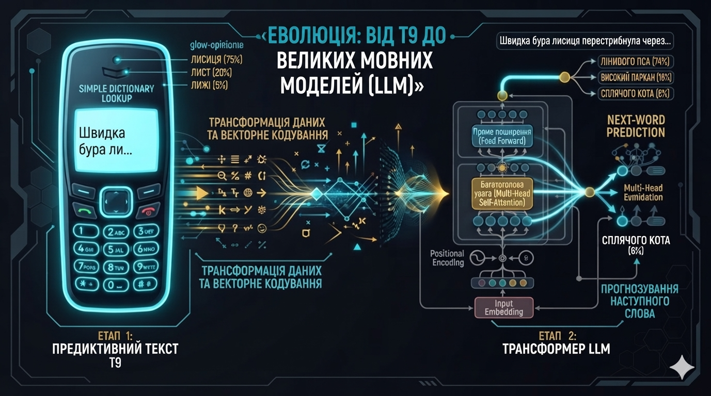
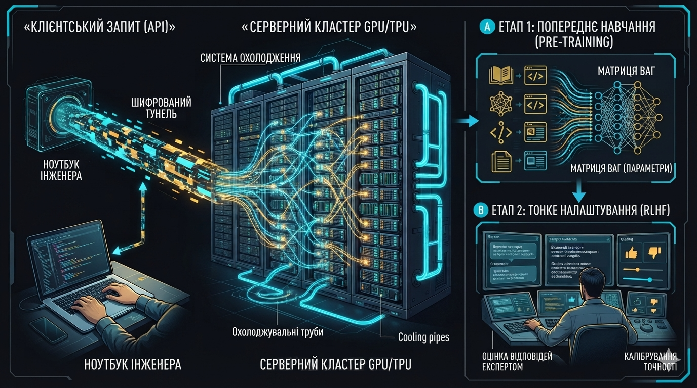
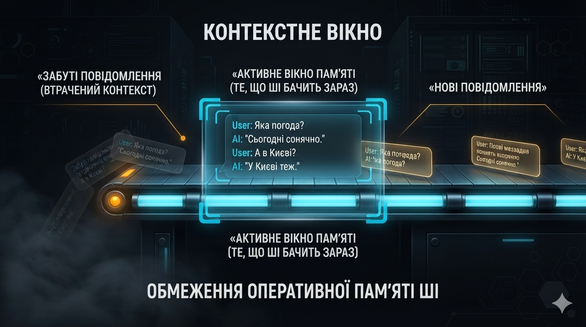
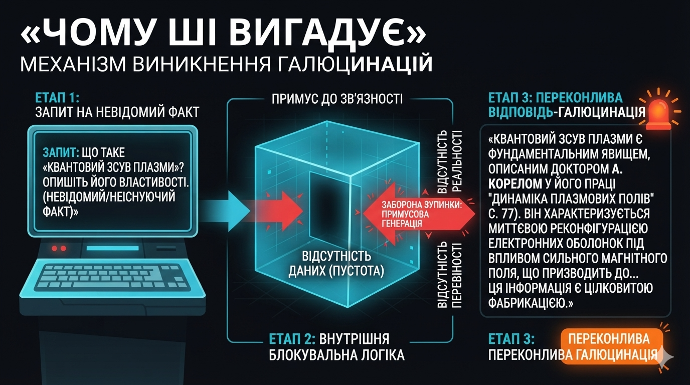
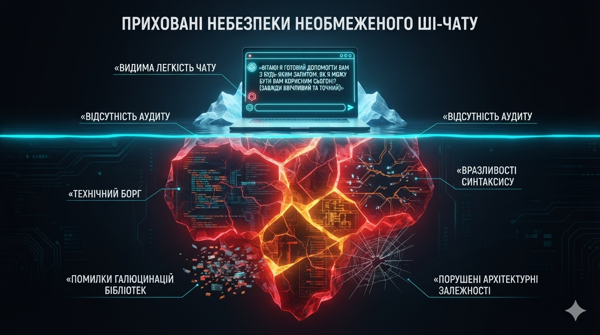
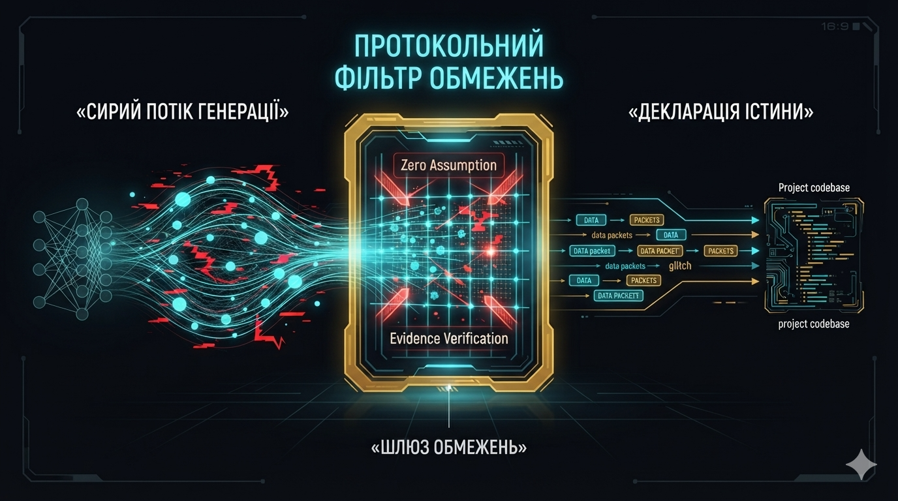
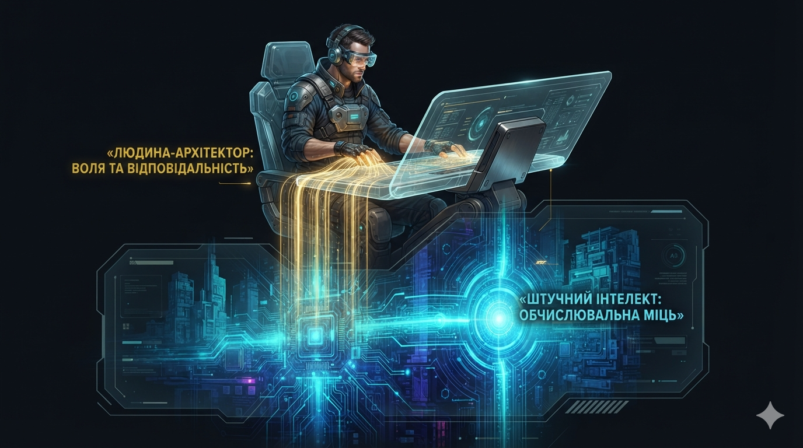
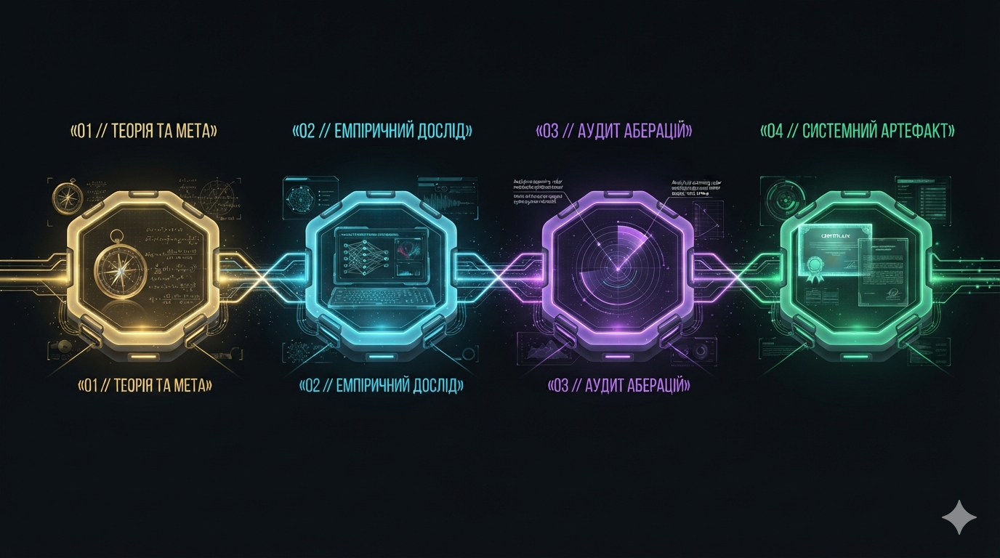

Дослідження порядку практичної взаємодії людини з мовними моделями, аналіз причин виникнення помилок та пошук методів надійної організації спільної роботи.
Концептуальним пращуром сучасних технологій є система предиктивного введення тексту Т9 на мобільних телефонах. Вона аналізувала послідовність натискань і пропонувала слова зі словника.
Сучасні великі мовні моделі (LLM), які в масовій культурі заведено називати «штучним інтелектом» або ШІ, базуються на тому ж базовому математичному принципі, але масштабованому до сотень мільярдів параметрів: вони безперервно обчислюють, який наступний токен статистично має слідувати за попередніми.

Модель не функціонує на пристрої користувача — це масивні матриці обчислень, розгорнуті на серверних кластерах графічних прискорювачів у віддалених дата-центрах.
Навчання складається з двох етапів: попереднього тренування на терабайтах світової літератури та веб-сторінок (вивчення структури мови) та тонкого налаштування методом RLHF за участю експертів-людей, що перетворює сиру нейромережу на ввічливого інтелектуального асистента.

🖼️ [Очікується ілюстрація 02]Людське враження від спілкування виникає через те, що має місце точна семантична мімікрія. Модель переводить кожне слово у математичні координати (векторний простір).
Механізм самодовільної уваги (Self-Attention) зіставляє контекстні зв'язки між усіма словами запиту та синтезує речення, які ідеально відтворюють людські синтаксичні та логічні патерни, створюючи ілюзію свідомого діалогу.
Нейромережа не володіє власною безперервною пам'яттю між окремими сесіями, вона є повністю stateless.
Ілюзія пам'яті створюється штучно: при кожній новій репліці додаток пересилає серверу всю попередню історію у межах контекстного вікна. Коли діалог розростається, модель починає втрачати увагу до деталей на початку бесіди.

🖼️ [Очікується ілюстрація 04]Виникнення галюцинацій є прямим наслідком архітектури: модель оптимізована на правдоподібність і плавність викладу, а не на перевірку фізичної реальності (відсутність Ground Truth).
Коли модель стикається із запитанням без точних фактів у своїх числових вагах, алгоритм не зупиняється, а продовжує рядок найбільш ймовірними за стилем словами, створюючи переконливу вигадку замість правдивого визнання незнання.

🖼️ [Очікується ілюстрація 05]Якщо мовна модель є стохастичним генератором правдоподібності, то довіряти їй інженерні розрахунки, програмні модулі чи наукові висновки у режимі вільного «побутового спілкування» категорично небезпечно.
Без жорстких обмежень модель прагне задовольнити користувача за будь-яку ціну, вдаючись до вигадування неіснуючих джерел, бібліотек чи топографічних маршрутів (синдром First-Working-Solution), що створює прихований критичний борг у системі.

🖼️ [Ілюстрація I: Ризики хаотичного чату]Головна мета нашого дослідження — розробити та експериментально обґрунтувати методологію дисциплінованого регулювання людино-машинної взаємодії.
Ми досліджуємо, як за допомогою формальних протоколів та дисциплінарних обмежень виключити стохастичні галюцинації та перетворити генеративну модель на детермінований і надійний інженерний інструмент.

🖼️ [Ілюстрація II: Протокольний фільтр обмежень]Ми закріплюємо принцип неподільної відповідальності оператора: людина є єдиним носієм архітектурної волі, критичного аналізу та юридичної експертизи.
Нейромережа бере на себе трудомістку рутину швидкісної обробки даних, але функціонує суворо в межах заданих людиною когнітивних кордонів за формулою: «Людина спрямовує — Машина будує».

🖼️ [Ілюстрація III: Доктрина Симбіозу]Дослідження виконується послідовно відповідно до програми навчального курсу. Кожен розділ присвячений окремому виклику у взаємодії з ШІ та підпорядкований обов'язковому 4-етапному інженерному циклу:

🖼️ [Ілюстрація IV: 4-етапний регламент дослідження]